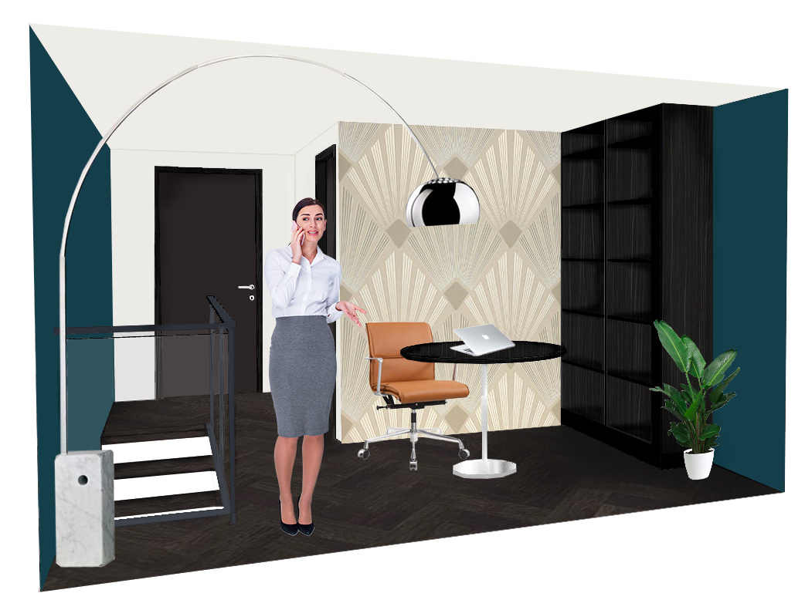
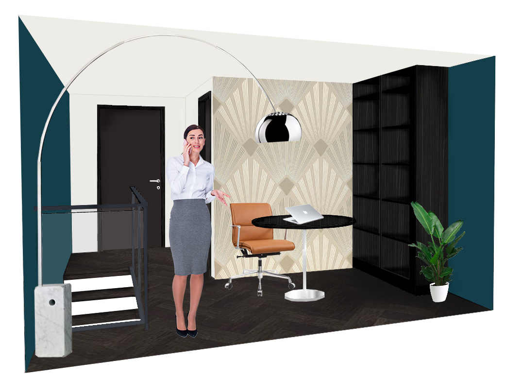
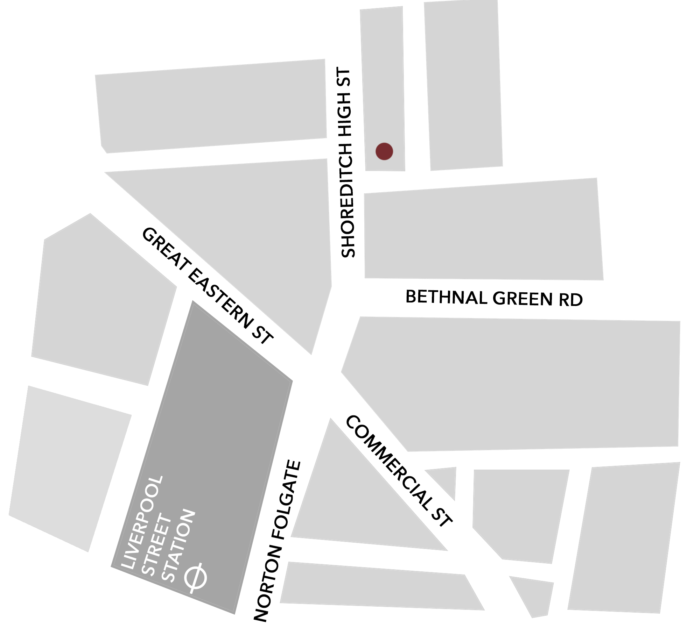

- SUITE D'ALBERGO
Il progetto d’esame prevede la realizzazione di una suite d’albergo pensata per una clientela internazionale costituita da uomini e donne d’affari. L’albergo è situato nel cuore della città di Londra, centro finanziario europeo e mondiale, in una posizone strategica per gli spostamenti. A pocho passi dall’hotel,infatti, si raggiunge la Liverpool Street Station. Si tratta di un grande vantaggio per una clientela che si presume abbia nell’arco di una stessa giornata numerosi appuntamenti, anche in diverse zone della città e senza tempo da perdere.
Al primo piano della stanza d'albergo si trova un piccolo ma efficiente angolo cottura con zona pranzo e il salotto, un ambiente sobrio e raffinato ideale anche per eventuali meeting di lavoro.
PIANTA PIANO AB
Sotto il televisore a parete è stato collocato un mobile contenitore su misura per documenti e valigie. L'angolo cottura, arredato con gusto, è dotato di tutti gli elettrodomestici e di una piccola zona pranzo, ideale per piccoli pasti.
Al secondo piano, invece, è stata progettata la camera da letto,
uno spazio elegante e sofisticato, arredata scegliendo materiali di pregio.
Con una vista mozzafiato sulla città, è perfetta
per accogliere una clientela selezionata e di prestigio. Un grande bagno, dotato di tutti i confort
e servizi in un'atmosfera lussuosa e, infine, lo studio.
Un ambiente ideale, silenzioso e riservato, per gli utenti dell'albergo, per rispondere alla loro esigenza di uno spazio dover
poter continuare le proprie attività lavorative.
PIANTA PIANO A


SEZIONI S-01 e S-02
 

Con una vista mozzafiato sulla città, è perfetto per accogliere la clientela dell'albergo.
Lo studio, invece, è un ambiente ideale, silenzioso e riservato, per gli utenti dell'albergo, per rispondere alla loro esigenza di uno spazio dover poter continuare le proprie attività lavorative.

SHOREDITCH ST 23
Londra, Inghilterra EC2M 7PY
tel. +44 20 3911 2034
E-mail businesshotelondon@london.uk
Per raggiungerci: EASYJET